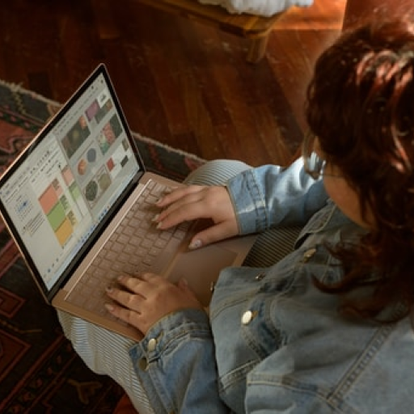

团队介绍
新闻动态
新闻列表
前往
关于我们
一家专注系统高端定制开发的公司
互联网指的是是网络与网络之间所串连成的庞大网络，这些网络以一组通用的协议相连，形成逻辑上的单一巨大国际网络。
互联网始于1969年美国的阿帕网。这种将计算机网络互相联接在一起的方法可称作“网络互联”，在这基础上发展出覆盖全世界的全球性互联网络称互联网，即是互相连接一起的网络结构。
我们出色的专业开发团队扎实的技术支持，优质高效的服务意识和丰厚的资源优势，提供专业的网站建设，微信小程序，APP开发，等技术服务。成果，专注于为客户提供专业有效的互联网系统解决方案。
地址：中国山东省青岛市市南区某某中路20号
邮箱：1370XXX171
电话：0532-8888888